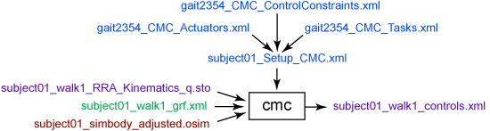

The purpose of Computed Muscle Control (CMC) is to compute a set of muscle excitations (or, more generally, actuator controls) that will drive a dynamic musculoskeletal model to track a set of desired kinematics in the presence of applied external forces (if applicable).
The Computed Muscle Control Tool is accessed by selecting Tools → Computed Muscle Control… from the OpenSim main menu bar. Like all tools, the operations performed by the Computed Muscle Control Tool apply to the current model.
Overview
The figure below shows the required inputs and outputs for the Computed Muscle Control Tool. Each is described in more detail in the following sections.

Each of the files in this figure can be categorized as either experimental data, an OpenSim file (.osim), a settings file, or a file generated by the workflow.
The file names are examples that can be found in the examples/Gait2354_Simbody directory installed with the OpenSim distribution. |
Settings File
The subject01_Setup_CMC.xml file is a setup file for the CMC Tool, which specifies settings, inputs, and outputs that affect the behavior of the tracking controller to determine actuator (including muscles) controls. These can be defined using the GUI or by hand. Details of the settings are described in the section on the Graphical User Interface.
The setup file identifies the actuators (i.e., the residual actuators, as required for dynamic consistency) as well as the kinematic tracking tasks. Furthermore, control constraints on the actuators (to limit the maximum residual force) can be specified.
Inputs
Several data files are required as input by the Computed Muscle Control Tool:
subject01_walk1_RRA_Kinematics_q.sto: Contains the time histories of model kinematics, including the joint angles and pelvis translations from RRA.
gait2345_CMC_Tasks.xml: The tracking tasks file specifying which coordinates to track and the corresponding tracking weight (weights are relative and determine how "well" a joint angle will track the specified joint angle from RRA).
gait2345_CMC_ControlConstraints.xml: Contains limits on model actuators, which include muscles, reserve and residual actuators. The control constraints file specifies the maximum and minimum "excitation" (i.e., control signal) for each actuator. Control constraints can also be used to enforce when certain actuators are "on" or "off" and the range in which they can operate.
subject01_walk1_grf.xml: External load data (i.e., ground reaction forces, moments, and center of pressure location). See Inverse Dynamics for more details.
subject01_simbody_adjusted.osim: A subject-specific OpenSim model generated by scaling a generic model with the Scale Tool or by other means, along with an associated marker set containing adjusted virtual markers. The model must include inertial parameters. The model should have an adjusted torso center of mass to reduce residuals.
gait2345_CMC_Actuators.xml: Contains the residual and reserve actuators, as in RRA.
Outputs
The Computed Muscle Control Tool primarily reports the necessary controls:
subject01_walk1_controls.xml: Contains the excitations to individual muscles as well as controls for any residual and/or reserve actuators.
subject01_CMC_forces.sto (not shown): Muscle forces and reserve/residual forces and torques.
subject01_walk1_states.sto (not shown): Model states and muscle states of the simulated motion (i.e., joint angles AND velocities, muscle fiber lengths AND activations).
Best Practices and Troubleshooting Tips
CMC Settings:
- The reserve actuators are torques that are added about each joint to augment the actuator’s force in order to enable the simulation to run (reserves turn on when an actuator cannot produce the needed force at a given time point). To help minimize reserve torques, make an initial pass with default inputs, and then check reserves, residuals, and joint angle errors. To reduce reserves further, decrease tracking weights on coordinates with low error.
- Optimal forces for reserves should be low to prevent the optimizer from "wanting" to use reserve actuators (an actuator with a large optimal force and a low excitation is "cheap" in the optimizer cost). If larger forces are needed for a successful simulation, increase the maximum control value of residuals. The residuals will then be able to generate sufficient force, but will be penalized for doing so.
- If you are still getting high reserves for a particular degree-of-freedom during a particular time range in the simulation, it may be useful to examine more closely the muscles which span the degree-of-freedom during that time region (see TipsForDebuggingMuscleActuatedSimulations.pdf). In particular:
- Check passive muscle forces (e.g., quadriceps). Large passive forces (from large knee flexion angles) may induce active forces in the antagonistic muscles (e.g., hamstrings, gastrocnemius), which may not be desired. Passive forces cannot be controlled in CMC; they are purely a function of the whole-body kinematics of the motion. Although tempting, do not increase the maximum isometric force excessively unless you know its consequences in the muscle model. Since the passive muscle force is modeled as a function of maximum isometric force, if you increase the maximum isometric force in the hope of making your active muscles stronger, you will also be increasing the passive forces in the muscles as well, thereby not helping the situation. To decrease passive muscle forces, you want to reduce the passive muscle stiffness property of muscle (or, more specifically, increase the FmaxMuscleStrain parameter in the Thelen2003Muscle).
- Check normalized fiber length during the motion (using the Plotter Tool). Is the muscle acting at suboptimal fiber lengths (i.e., less than 0.8 or greater than 1.2) at the time where the reserves are being generated? If so, then you may consider modifying either the tendon slack length or the optimal fiber length of the muscle so that it is operating more optimally (and, thus, capable of generating a greater force) during this time in the simulation. Although many cadaver studies report the optimal fiber length of a muscle, the tendon slack length is almost never reported, even though it is especially sensitive to the operating region on the force-length curve. Small adjustments to the tendon slack lengths can, therefore, be justified in reducing the reserves on the basis that we don't have as much confidence in this value to begin with.
- You should almost always use the "fast" target for CMC. Note that this is the default (e.g. if you run CMC through the GUI). You can only change this value in the xml setup file for the tool. The fast target requires the joint accelerations at each time step to be matched to the RRA results. "Fast" target should work for normal subjects; "slow" target may be needed for subjects with pathologies.
- Start CMC at least 0.03 seconds before the point where you want to start analyzing your data, as CMC requires 0.03 seconds to initialize.
- See How CMC Works and How to Use the CMC Tool for more information.
CMC Troubleshooting:
- If CMC is failing, try increasing the maximum excitation for reserves and residuals by orders of magnitude until the simulation runs, then try working your way back down while also "relaxing" tracking weights on coordinates.
Evaluating your Results:
- Peak reserve actuator torques should typically be less than 10% of the peak joint torque.
- Peak residual forces should typically be less than 10-20 N; peak residual moments, less than 75 Nm (depending on the type of motion).
- Double-check your kinematics in comparison to RRA. Generally, they should match well as long as you are using the "fast" target.
- If performing an Induced Acceleration Analysis, you should verify that reserves and residuals contribute less than 5% to the net acceleration of interest.
Compare the simulated activations to experimental EMG data (either recorded from your subject or from the literature). Activations should exhibit similar timing and magnitude to EMG data. You can also compare your muscle activations and/or forces to other simulations from SimTK or the literature.
The table below shows an example of threshold values used to evaluate CMC results for full-body simulations of walking and running.

Next: How CMC Works
Home: Computed Muscle Control
{kind=link}